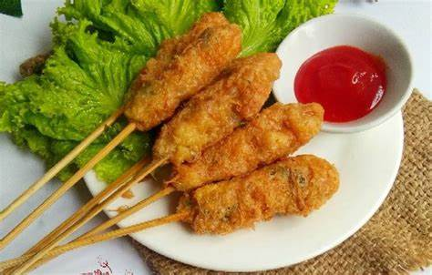

Sempol Tahu
Bahan-bahan
- 2 buah tahu
- 2 sdm bawang goreng
- 1 buah telur
- 1 sdm kaldu bubuk
- 1 sdt garam
- 8 sdm tepung terigu
- 8 sdm tepung tapioka
Bahan Pencelup
Cara Membuat
-
Hancurkan tahu. Tambahkan telur, bawang goreng, dan kaldu bubuk.
Aduk rata.
-
Masukkan garam, terigu, dan tapioka. Aduk rata. Koreksi rasa.
Ambil adonan secukupnya, tusuk ke stik kayu, dan bulatkan. Lakukan
hingga selesai.
-
Didihkan air. Rebus sempol hingga matang, tandanya sempol
mengembang ke atas. Tiriskan.
-
Kocok lepas telur. Celupkan sempol ke adonan telur, balur rata.
Goreng sempol hingga kecoklatan. Angkat dan tiriskan.
- Siap dinikmati.